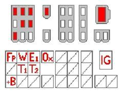

General information
The engine control system constantly monitors the input signals from the various sensors in the injection system and compares them with defined limit values. If a signal violates these limits, the control unit stores the fault code in the memory. The fault codes can easily be read off on the engine control lamp.
Toyota uses two-fault indicating autodiagnosis; this means that first fault indication does not normally light the engine lamp. The engine lamp only lights up when the fault is detected on two consecutive run cycles. On autodiagnosis with Test mode, the engine lamp lights up at the first fault indication.
Diagnostics mode on all systems
Connect a jumper between E1 and T/T1. Switch on the ignition. The engine lamp blinks out the fault code(s). (Earlier models have T, later ones T1.)
Test mode, only on TCDL
Connect a jumper between E1 and T2. Test-drive the car and try to reproduce the fault reported by the customer. The engine lamp lights up if and when the autodiagnosis detects the fault. Return to the workshop and read out the fault codes with Normal mode.
Appearance of the fault codes
No faults stored
If there are no faults stored in the control unit, the engine lamp blinks continuously at intervals of 0.26 seconds.
0.26s 0.26s 0.26s 0.26s 0.26s 0.26s 0.26s 0.26s 0.26s
Ex.1. No faults stored
Fault code stored
The meanings of the blinks are as follows:
The number of tens is indicated by 0.5-second blinks.
The lamp remains unlit for 1.5 seconds between tens and units.
The number of units is indicated by 0.5-second blinks.
The lamp remains unlit for 2.5 seconds between fault codes.
When all fault codes have been displayed, the lamp remains unlit for four seconds before the fault codes are repeated.
0.5s 1.5s 0.5s 0.5s 0.5s 0.5s 0.5s
Ex.2. Fault code 13, one ten, an interval and three units
The diagnostics socket
The diagnostics socket is located on the engine or on one of the suspension strut towers. The appearance may vary. The illustration shows the later model.

The diagnostics socket
Explanation of the terminals:
+B Main relay contact, +12 V when the main relay is energized
E1 Ground
FP Fuel pump relay contact, +12 V when the pump relay is energized
IG RPM from power output stage or ignition coil
T1 Diagnostic mode
T2 Test mode
W Engine lamp
Two types of diagnosis
- Diagnostic mode is used to read out the fault codes stored in the memory of the control unit.
- Test mode is used to store fault codes during test driving. Useful for finding intermittent faults.
Reading fault codes
The fault codes can be read off on the engine control lamp.
Diagnostics mode on all systems
1. | Jumper between E1 and T/T1 (earlier models have T, later ones have T1) |
2. | Switch on the ignition |
3. | The engine lamp blinks out the fault code(s) |
Test mode, only on TCDL
1. | Connect a jumper between E1 and T2 |
2. | Test-drive the car and try to reproduce the fault reported by the customer |
3. | The engine lamp lights up if and when the autodiagnosis detects the fault |
4. | Return to the workshop and read out the fault codes with Normal mode |
Erase fault codes
Correct the faults in the system before you delete the fault codes.
1. | Turn off ignition and dismount fuse EFI in fusebox for at least 20 seconds |
2. | Mount the fuse |
3. | Drive the car |
4. | Check that the codes has been erased |
Fault code list
The control unit will display the fault codes by flashings on the check engine lamp when putting a jumper between T/T1 and E1 and turning ignition on.
EFI
1 | No faults in the system |
2 | MAP-sensor |
3 | Control unit or igniton output stage |
4 | Coolant temperature sensor |
6 | Revolution sensor |
7 | Throttle potentiometer |
8 | Air inlet temperature sensor |
9 | Road speed sensor |
10 | Cranking signal is missing |
11 | AC on during test |
TCCS + TCDL
11 | Power supply to control unit |
12 | Revolution signal |
13 | Revolution signal |
14 | Ignition pulses |
16 | ECT-signal missing (AT) |
21 | Lambda sensor circuit |
22 | Coolant temperature sensor |
24 | Air inlet temperature sensor |
25 | Fuel/air mixture to lean |
26 | Fuel/air mixture to rich |
31 | Air flow sensor/MAP-sensor |
32 | Air flow sensor/MAP-sensor |
33 | Idle valve |
34 | Turbo charge sensor |
35 | Turbo charge sensor |
41 | Throttle potentiometer |
42 | Road speed sensor |
43 | Cranking signal missing |
51 | Connection fault. Shown when AC ON, idle is OFF or D/R (AT) during test |
52 | Knock sensor signal |
53 | Knock sensor regulation in control unit |
54 | Intercooler |
55 | Knock sensor signal |
Model, yearmodel and system
Three different types of systems can be tested:
- EFI-system with one digit code
- TCCS-system with two digit code and diagnose mode
- TCCS- + TDCL-system with two digit code and diagnose mode and test mode
Model | Year | Engine | System |
Camry 2.0 GLi | m/84-90 | 2S-E | EFI |
Camry 2.0i | m/86-91 | 3S-FE | TCCS |
Camry 2.2i 16V | m/91-93 | 5S-FE | TCCS + TDCL |
Camry 2.5i | m/88-92 | 2VZ-FE | TCCS |
Camry 3.0i 24V | m/91-93 | 3VZ-FE | TCCS + TDCL |
Camry V6 GX | m/95- | TCCS + TDCL | |
Carina 1.6i | m/92-93 | 4A-FE | TCCS + TDCL |
Carina 2.0i | m/92-93 | 3S-FE | TCCS + TDCL |
Carina 2.0GTi | m/92-93 | 3S-GE | TCCS + TDCL |
Carina XLi | m/95- | TCCS + TDCL | |
Celica 1.6i | m/90-93 | 4A-FE | TCCS + TDCL |
Celica 1.8i Auriol | m/95- | TCCS + TDCL | |
Celica 2.0i GT | m/86-89 | 3S-GE | TCCS + TDCL |
Celica GT 2.0i | m/90-93 | 3S-GE | TCCS |
Celica GT-4 | m/88-89 | 3S-GTE | TCCS |
Celica GT-4 Turbo 4x4 | m/90-93 | 3S-GTE | TCCS + TDCL |
Corolla 1.3i | m/92-93 | 4A-FE | TCCS + TDCL |
Corolla 1.6i 4x4 | m/89-93 | 4A-FE | TCCS + TDCL |
Corolla GT Coupé | m/84-87 | 4A-GE | TCCS |
Corolla GTi | m/87-89 | 4A-GE | TCCS |
Corolla GTi | m/89-92 | 4A-GE | TCCS + TDCL |
High-Ace 2.4i | m/89-93 | 2RZ-E | TCCS |
MR2 2.0i | m/90-93 | 3S-FE | TCCS + TDCL |
MR2 2.0i GT | m/90-93 | 3S-GE | TCCS + TDCL |
Previa 2.4i | m/90-93 | 2TZ-FE | |
Previa GL | m/95- | ||
Previa 3.0i | m/89-93 | 3VZ-E | |
Supra 2.8i | m/81-86 | 5M-GE | EFI |
Supra 3.0i | m/86-93 | 7M-GE | TCCS + TDCL |
Supra 3.0i Turbo | m/88-93 | 7M-GTE | TCCS + TDCL |
Lexus ES250 | m/90- | TCCS + TDCL | |
Lexus LS400 | m/90- | TCCS + TDCL | |
Lexus SC300 | m/92- | TCCS + TDCL | |
Lexus SC400 | m/92- | TCCS + TDCL | |
Lexus GS300 | m/95- | TCCS + TDCL |
EFI: | Electronic Fuel Injection |
TCCS: | Toyota Computer Controlled System |
TCDL: | Toyota Computer Diagnose Link |